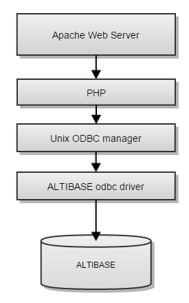
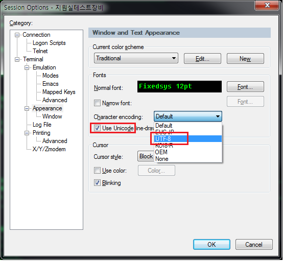

Situation
When searching Korean on a web page using PHP, Korean characters may be broken.
This document describes the causes and solutions for this situation.
PHP execution structure
The ALTIBASE HDB DB can be accessed with ODBC API from PHP page using the odbc driver manager unixODBC (http://www.unixodbc.org/) and odbc driver provided by ALTIBASE.
For information on how to connect ALTIBASE and PHP, refer to 『Integration Guide for Altibase』.

Main Cause
Hangul is broken can be caused by configuration problems in various parts such as web server configuration, PHP configuration, unixODBC configuration, etc. First, you must first check that the DB result including Hangul is displayed normally in unixODBC.
Use the $UNIXODBC_HOME/bin/isql utility provided by unixODBC to execute a query on the DB and check if the query results including Korean characters are displayed normally, and then check the PHP setting.
After that, the last step is to check the web server setting or web page setting to make sure there is no problem with the character set setting related to Korean.
Setting NLS_USE in ODBC settings
In odbc.ini, the unixODBC setting, there is an NLS_USE setting that specifies the client character set used for connection to the DB. If this setting value and the character set setting of the DB does not match, there may be a problem with the Korean language output.
This property must be set to the same value as the DB character set.
Contents set in the odbc.ini file
[Altiodbc]
Driver = /home/omegaman/altibase_home/lib/libaltibase_odbc-64bit-ul64.so
Description = altibase odbc
User = SYS
Password = MANAGER
ServerType = altibase
Server = 127.0.0.1
User = SYS
Port = 21038
NLS_USE = MS949
Database = mydb
FetchBufferSize = 64
ReadOnly = no
TraceFile = /tmp/odbc.log
Trace = 1
Korean language support code setting in terminal window
Even though data is normally imported from the DB, if the terminal window that outputs it does not support the output of the Korean character set, the Korean language may not be displayed properly.
If the DB character set is set to UTF8, the code page (chcp command) must be set so that Unicode can be displayed in the window command window. Otherwise, Korean characters will not be displayed normally.
C:\Users\omegaman>isql -s 192.168.1.35 -port 20416
iSQL> set vertical on;
iSQL> select nls_use, nls_characterset from v$nls_parameters;
NLS_USE : US7ASCII
NLS_CHARACTERSET : UTF8
iSQL> exit;
C:\Users\Altibase>chcp 65001 <-- The console character must be set to Unicode (65001) as the character set of the DB is UTF8, which is unicode.
Active code page: 65001
When a program such as Secure CRT, a commonly used terminal access program, also outputs UTF8 Korean characters, the Korean should be properly set during the session set to display Korean characters.

Setting the maximum length set for a variable in PHP config
If the php program is running, varchar or clob data with large data may be broken or the same data may appear repeatedly. If there is a problem with data output from a specific part, the user should look at the odbc configuration part.
If it happens as above, change the odbc.defaultlrl value in php.ini so that all data can be included.
For example, if the column is varchar(65536), data may be output incorrectly by default odbc.defaultlrl = 4096.
If if it changed to odbc.defaultlrl = 65536, it can be confirmed that data normally output up to 64KByte.
Generally, php.ini is under /etc, but this may vary depending on the configuration.
{kind=link}
{kind=link}